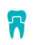
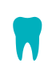
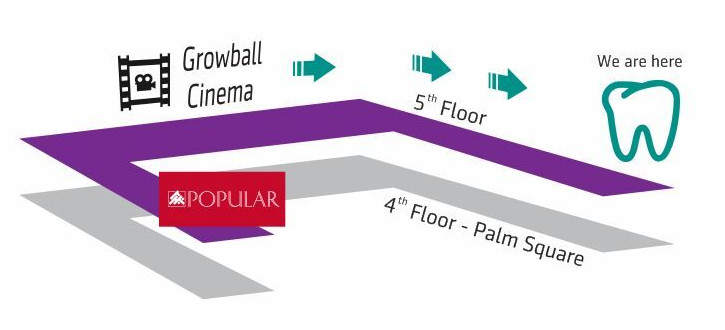

Establish since year 2004. Located in the city center of Kota Kinabalu, Sabah.
We are experienced dental team providing wide range of dental services.
Dr. Sylvia Lim Sze Wei
BDS (Malaysia)
MRDS Royal College of Surgeon (Edinburgh, UK)
FICD, FICCDE (Orthodontic)
Dr. Alex Lo Shen En
BDSc (WA, Australia)
Cert. Oral Implantology (Frankfurt, Germany)
FICD, FADI, FICCDE
Dr. Wong Shuk Ting
BDS (Malaysia)
Dental Checkup
Having dental problem and don't know where to go?
Our dental team has 14 years of dental experienced, our dentists are registered under Malaysian Dental Council. We diagnose and treat all kinds of dental diseases.
Prevention is better than cure. Dentists recommend 6 monthly dental check up for every individual to detact early dental diseases eg. Dental caries , bleeding gums, calculus and etc.
Our dentists perform fissure sealants and Fluoride varnish for children and young adults in order to prevent dental caries.
Restoration (Dental Fillings, Cosmetic Fillings)
A confident smile is the best gift we can give to you. Because when you smile, the world will smile with you.
We are passionate dentists who perform high quality cosmetic dental restorations which mimic your natural teeth.
Don't worry about your broken tooth, come to us and let us did miracles on your smile.
Wisdom Tooth Removal
If your third molars are not erupted after 21year old, you are most probably having impacted wisdom tooth.
Wisdom tooth could be a painful experience if it is infected due to food stuck, it can cause caries and also developed in to cysts if we ignore it.
Our experienced dentists can normally take the wisdom tooth out within an hour of minor oral surgery. Our patients rarely experienced swelling the next day.
Need our help? Call 016 832 1215
Braces
Are you having crooked teeth that affects your smile and your confident?
BRACES IS LIFE CHANGING.Our experienced dentists can solve your problem within 2years. Metal braces can perfect your smile by realign your malpositioned teeth.And extractions is Not compulsory in every cases.
Call Us Now.
Invisalign (Invisible Braces)
Invisalign is the perfect choice for individuals who need Braces , yet do not want to wear Metal brackets.
It is faster than metal braces , you can take it off when you are taking a meal or brushing.
Most of the time you can self monitor the treatment progress, and it is convenient for working adults.
Our dentists are certified invisalign provider in Kota Kinabalu.
Call us now for consultation.
Root Canal Treatment
Painful tooth along with several sleepness night?
You are likely to have pulpitis and need to get dead pulp removed.
Root canal treatment can ease the pain due to infected tooth pulp.
Call us at 016 832 1215 for dental emergency.
Denture
No teeth to chew ? Missing front teeth embarrass you?
Our dental and Laboratory team provide dentures services. We make dentures from varieties of materials, from acrylic to flexible dentures.We customised your dentures. You get to choose the shape , the colour and the design of your dentures for your best comfort. Make an appointment with us .

Crowns and Bridges
Looking for more permanent solution for discolored tooth? Or want to salvage a badly broken tooth?
Crowning is a more permanent choice for your broken tooth. Dental crowns also protect the root canal treated tooth from fracture. Our dentists makes highly aesthetic crowns , they look and feel just like your own teeth.
Dental Implants (Straumann Original, Switzerland)
Dental implants are the best option for replacing missing teeth. And it is a Painless procedure!
Our dentists are well trained implant surgeons. Most of our patients do not need to take painkillers the next day after implant surgery. How we do it? You have to experienced it yourself. Schedule an appointment with us

Dental Whitening
Yellow teeth due to smoking , tea, coffee and wine?
We can give you a set of White teeth in only 30minutes.
Our tooth whitening products are certified by FDA
It is Safe, Fast , and Effective!
Call us for whitening treatment now!
Children Dentistry
Baby teeth is equally important !
Children caries can be painful and affecting normal feeding and nutrients absorption for growing up.
Our dentists love kids. We spend time with your kids, let them familiarize with dental environment before proceed with dental check up and treatment.
Say goodbye to dental phobia!
Send your kids here and we will make their dental experience a fantastic one.
Call for appointment.
Location Map

On the 5th Floor facing the Growball Cinema ticketing counter. Turn right towards the lif.
Then turn right again and you can see the clinics main entrance.